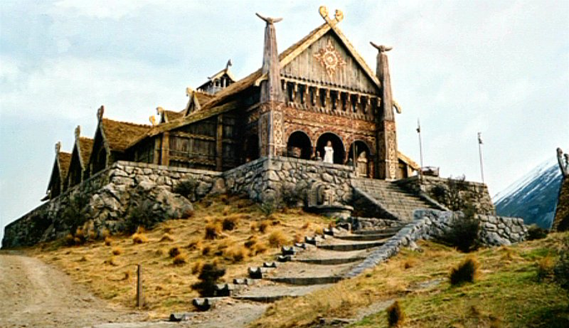

Карта средиземья

К карте
Все элементы
Эдорас
Эдорас —расположенная на холме в долине Белых гор столица Рохана. Большой город, стены состоят из камня, но для обмана врагов покрыты деревом.  Во время правления Эорла — первого короля Рохана столица была в Альдбурге, но его сын, Брего построил в Эдорасе Золотые Палаты и решил дать Эдорасу титул столицы. Главным зданием Эдораса является Золотой Чертог Медусельд, где восседает король Рохана. Эдорас устроен почти как Минас Тирит, но там нет террас, а дома сделаны из дерева. Еще в городе есть загон для лошадей. Дома очень просторны. Во время Войны Кольца город был оставлен жителями.
Он описывается как очень красивый город из деревяных домов. Дворец короля Рохана известен по всему Средиземью, так как он покрыт золотом. Колонны тоже состоят из золота, как и ворота.